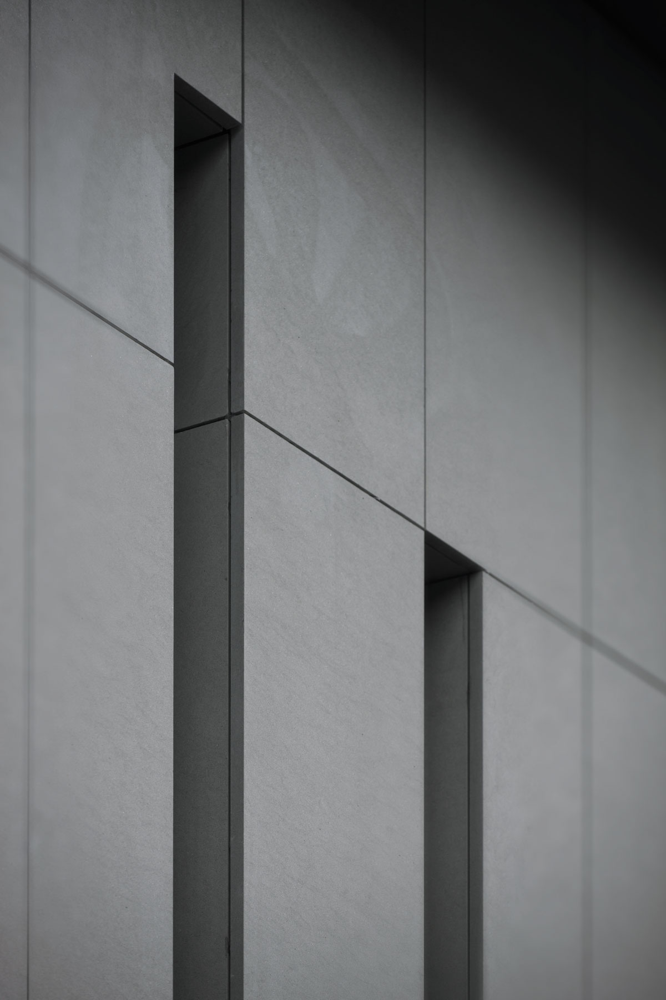
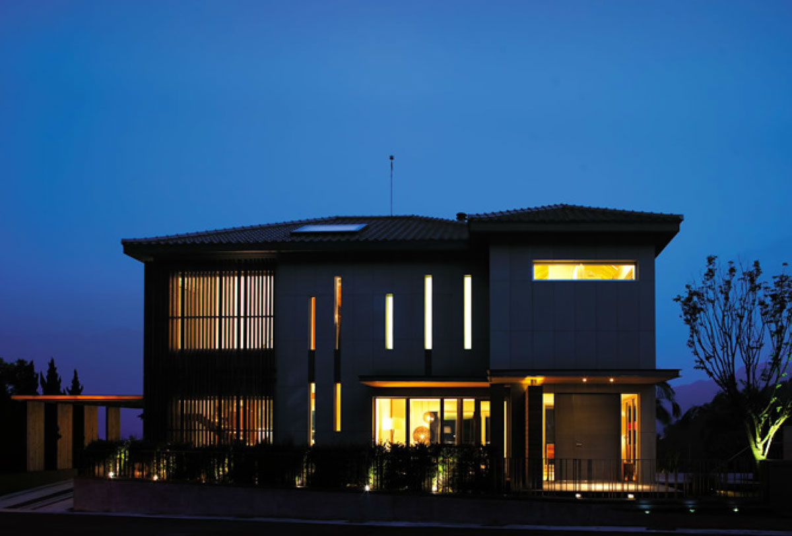

Aesthetic美學
卡爾拉格斐 Karl Lagerfeld 曾說：「我這輩子只為一個主子服務，那就是美。」
對Giovanni而言，他親手打造「掬月」，每個環節都必須符合這樣的準則。
把繁複的東西拿掉，讓本質清楚呈現之後，一下子就可以判斷美或不美。就像最好的食材是不需添加太多調味料的。
你會看見建築的美學要素：秩序、平衡、優雅。掬月呈現的美學是純粹的，美感的來源則是多樣性的；可能來自和諧的線條比例，來自光線水影的變幻流動，來自鄰家小孩的一聲親切招呼，也來自你沈靜的內心。這個房子的可能性太多了。

